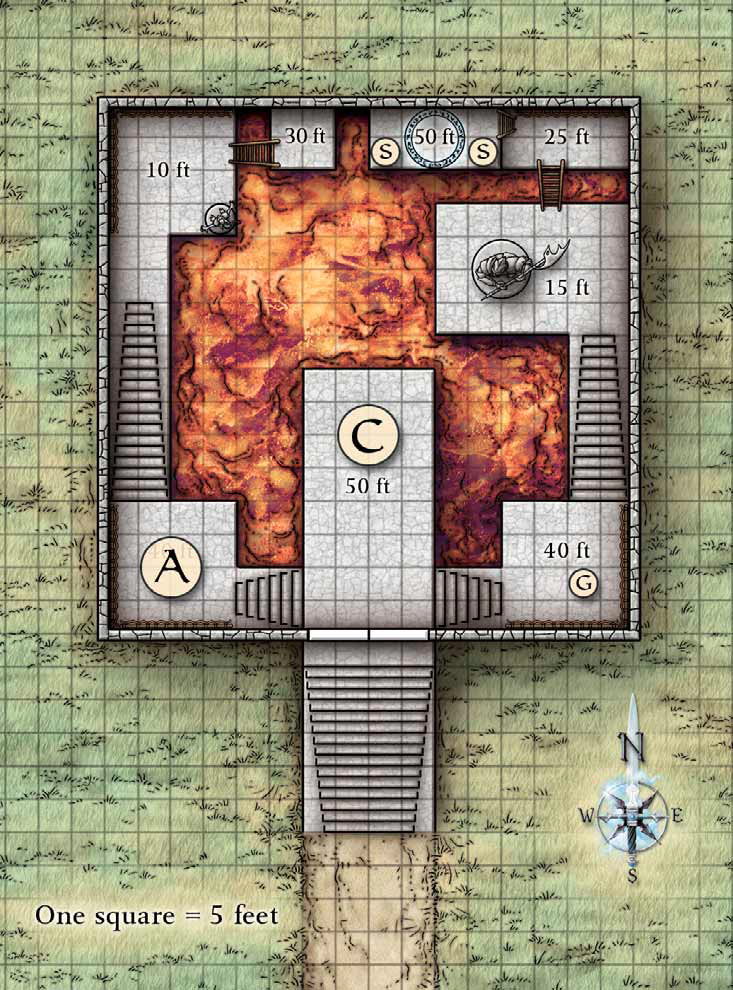

Beyond the Mottled Tower
The summons from the Council of Elders was sudden and unannounced. Once more, our heroes stood in the High Hall to be greeted by Overlook's elders, though their welcome was less brusque this time. Elder Cadrick addressed them as they approached the dais upon which he and the city's other four leaders stood:

"Greetings, friends. We have received a desperate message from Megan Swiftblade, leader of the Freeriders, who you might remember. The Freeriders have discovered that General Zithiruun had a powerful ally in his recent attack on the city. Although she does not identify this ally in her message, Megan has already survived three attempts on her life and fears that more will follow. If we help her, she will tell us who was ultimately behind the attack, hopefully in time to prevent another.
Again, we find ourselves in need of aid, and again we call upon you. Travel to the village of Talar and find out what Megan knows. Keep her safe, neutralize any immediate threat to her, and then return her to us."
Megan grew up in Talar, a small hamlet outside Brindol, and retreated there for safety. She did not know who was behind the attempts on her life but suspected it to be the ally of General Zithiruun she was threatening to name. Her message to the council made no mention of where she was staying, just that our heroes should leave a message for her at the Green Dragon tavern.

The council, concerned that the mysterious figure might still have designs on the city, dispatched our heroes to rescue Megan, eliminate any immediate threat to her safety, and return her to Overlook.
The journey to Talar was long but not overly arduous. Just before dusk after a week of travel, our heroes arrived at the village's tavern and inn, the Green Dragon.
The Green Dragon was a typical two-story village tavern and traveler's inn. Its outer walls were dressed stone, while internal walls and the floor were stout oak boards laid over thick joists. The roof was slate, and a small beer cellar was found under the common room. Inside and outside shutters kept the evening chill at bay.
The common room took up the majority of the first floor, with a large fireplace opposite the bar filling the area with warmth and light. The walls were covered in faded tapestries showing hunting and woodland scenes. The second floor housed the inn's guests.
Festivus spoke with Bernath - the innkeeper and a jovial, portly human widower - and arranged an impromtu performance in exchange for room and board. At first Bernath seemed uncomfortable with the idea but his 12-year-old son Niall, a devout fan, changed his father's mind.
Having secured rooms for the night and left their message, they took their rest in the dimly lit common room. Megan's message to the council stated that she would contact its emissaries only after making sure they had not been followed. With nothing left to do they sat back to slake their thirst and wait.
The majority of the patrons were human farmers relaxing after a hard day's work in the field. Many were appreciative of the change of pace and left their small groups to listen to Festivus.
A frail cloth merchant by the name of Leucis, deep in his cups, convinced Kallisa to join him as a fellow tiefling (and alchoholic). He was a little too successful and Karrion stepped in before he unloaded his wares on her.
Lechonero spent the evening hitting on a heavily armed eladrin woman named Sariel who has been sitting by herself. Though polite, she spurned all of his advances with a raised eyebrow.

Suddenly the tavern began to shudder violently as if in the grip of a powerful storm. Tipped tankards sloshed ale to the floor as several patrons were knocked back in their chairs. Window shutters banged wildly as the shaking increased, the floor and walls bucking as if alive. In panic, the other patrons staggered to their feet and attempted to flee the chaos.
With a horrendous cracking a ceiling beam was ripped free on the first floor. Leucis was struck by the falling timber and tumbled to the floor, unconscious. Feeling guilty for dealing roughly with the man earlier, Karrion hoisted the merchant over her shoulder and carried him to the door.
Shortly thereafter the upper floor groaned ominously as its planks and timbers began to twist and splinter. The poorly distributed weight on the second floor caused a portion to cave in, the impact tearing through the floor below and showering debris, Bernath, and a wobbly Kallista into the cellar and burying one of the local farmers.
Next, a particularly violent tremor shook the inn, hurling a shower of burning hot embers from the fireplace into the common room. A tapestry torn from the wall by a fleeing patron quickly began to smolder, but Kitara, now an old hand at fire fighting, quickly extinguished the flame.
The tavern convulsed as more violent tremors struck. The great beams holding the upper floor aloft began to buckle ominously. Lechonero headed for the cellar stairs behind the bar while Barases and Bin ushered farmers out the nearest windows.
The aging timbers above our heroes' heads snapped like kindling. Then A shower of floorboards and furniture heralded the upper floor's collapse.
Nial, terrified by the events, huddled under a table while the others fled. Barases tried to coax the boy from his hiding place, but his visage only served to further terrify the boy. Switching tactics, he scared Nial into the open and hauled him bodily outside.
Bin struggled to haul debris off the buried villager and throwing his arm over her shoulder carried the hobbled man out the nearby window.
Lechonero heaved open the trapdoor to the cellar and pulled Bernath into a fireman's carry and turned for the stairs, only to have Kallista stumble up ahead of him - saving a barrel of whiskey from the destruction.

Our heroes dived free with their wards in tow just before the doomed structure's final collapse - only to be met with a worse sight: Flames leapt high in the air, silhouetting huddled survivors against the heaped mounds of rubble that were once their homes. Many of the buildings in the immediate vicinity had at least partially collapsed, and fires were spreading through the ruins. A terrified screaming rose in the distance along the main track - villagers were running toward them, a dark shape oozing down the street behind them.
A viscous purple-red tide Blood Chaos was flowing into Talar, pouring out from a low, craggy hill at the edge of the village. A tower of mottled stone stood atop the hill, the ooze flowing out through a hole blasted out beneath it. Where twin arms of the flow had circled a collapsed house, fire suddenly flared, trapping a terrified and heavily pregnant woman on an adjacent wagon.
Worse still, horrific monsters resembling mounds of melting flesh writhed in the ooze. A series of hulking creatures Chaos Maulers, seemingly composed of congealed purple-orange liquid advanced with the tide on the helpless villagers. Their heads had no eyes or other features, and a single thick tentacle grew from their bellies. Among those creatures flitted a couple paper-thin monsters Skulking Terrors resembling headless, flattened orange and purple bats. They dripped a viscous ichor in their wake from a number of small holes on their undersides. And worst of all, a couple giant undulating orbs of melting orange and purple flesh Scions of Chaos writhed toward our heroes on a bed of muscular tentacles. Rings of larger tentacles jutted from the top of the orbs.
Lechonero jumped onto the wagon and carried the pregnant woman to safety while Karrion calmed the panicking draft horses, freed them from the wagon and drove them clear of the burning tide. The monsters were closing in too fast for our heroes to fight them off when another large wave of ooze swelled from under the tower and disgorged a battered, burning ship. The capsized vessel rode the wave down the hill and balancing on the keel was - Melvin! The boat flattened one of the giant orbs of tentacles as it ground to a halt and Melvin enacted his trademark chaos, drawing off several of the monsters.
Divided between two fronts, the monsters were no match for our heroes and were quickly dispatched.

The horrid ooze continued to slowly flow through the village, destroying everything it touched. However, sudden movement atop the nearby hill caught our heroes' attention. Even as they watched, the mottled tower shuddered, then began to sink into the ground. Two frantic figures - one dragging the other - appeared on the rooftop.
Our heroes rushed to the tower as it continued to sink into the earth, and by the time they reached the crest of the hill, only the roof and its battlements remained above ground. Two figures clung to the slate - one a human male dressed in sage's garb; the other a human female clad in armor, sword in hand. Though the male seemed utterly terrified, the woman was defiant despite what appeared to be a badly broken leg.
Crossing the ooze on blocks that had fallen from the tower, our heroes recognized Megan Swiftblade, leader of the Freeriders, even though she was badly injured and covered with dust. The short-cropped blonde hair and the vicious scar running from her forehead down her left cheek were a dead giveaway.
She introduced her portly companion in a tattered and torn ink-stained robe as Serten, apprentice to Falrinth - sage of the tower. The introductions were cut short however, as both she and Serten asked our heroes to descend into the tower to rescue Falrinth - still trapped inside. Serten told our heroes how the earthquake had released several monsters kept by Falrinth for research purposes. Megan rescued him from these foul creatures, then he returned the favor by dragging her to the roof when a collapsing wall broke her leg. Both feared the monsters have Falrinth trapped in the lower floors of the tower.

Agreeing to help, our heroes descended into the now subterranean tower. The earthquake and the tower's subsequent plunge into the hill had caused chaos within. Chairs and tables were overturned, while the contents of cupboards and shelves lay scattered upon the floor.
The earthquake has caused extensive damage to the tower. Though the ancient structure was in no danger of collapse, sections of its walls had been badly weakened. Cracks had appeared above all the windows and doors, while stone dust and crumbled mortar covered the floor. Here and there, the massive stone blocks of the walls jutted inward from the pressure of the earth outside.
The first floor down was Serten's quarters. Three large cells stood along the walls of that gloomy chamber. All showed signs of extensive damage, their bars wrenched free and scattered across the floor. To the left, open double doors provided access to another area beyond. To the right, a pair of large insectoid creatures Mezzodemons bearing a tridents lurked between the cells. At the sight of our heroes, they snarled and began to advance.
The insectoid creatures were joined by a pair of neanderthal like humanoids Grimlock Ambushers and a toothed man covered in rolls of loose flesh Foulspan seer. Our heroes were forewarned however, and took the monsters with ease - though the floor creaked and bowing alarmingly, dust falling from above.
Our heroes quickly descended through a level that served as a library, laboratory, and guest room; then one with a master bedroom and banquet table; and finally to the first floor containing a kitchen, pantry, and storage. Our heroes tiptoed around a jagged hole splitting the stone floor, flickering light welling up from a natural cavern below. Shadows moved within the light, signs of something lurking deep beneath the tower.
Kitara came across a magic orb belonging to Falrinth that she quickly pocketed before they discovered a portly human male huddling within the devastation of the kitchen - Falrinth. His straggly brown hair was disheveled, mud staining his robes, but he was largely unhurt and only interested in the welfare of Serten and Megan.
With Falrinth safely evacuated along with Serten and Megan, he told our heroes that he had no knowledge of a cavern beneath the tower before the earthquake, but that he heard a ritual being cast through the hole in his basement and assumed it must be the source of the ooze.

Proceeding back to the base of the tower our heroes dropped into the cavern to discover a gang of shadar-kai and githyanki operating massive pipes disgorging the ooze and a witch in the process of casting a Linked Portal ritual. It was a brutal combat, dancing between the pools of acidic ooze as spells flew back and forth. Despite a prolonged battle with the witch, our heroes proved victorious and managed to close the floodgates spilling ooze from the pipes. The witch never completed her Linked Portal ritual, but upon inspection Festivus determined it was being used as an escape route, not a means to summon more of the ooze.
With the immediate threat vanquished our heroes returned to interrogate Megan and Falrinth. Megan revealed that this was the fourth assassination attempt made against her and that the rest of the Freeriders have retreated into hiding across Elsir Vale. These attacks started after the Freeriders followed a band of mercenaries who escaped the siege of Overlook and discovered they worked for Sarshan. Further investigation uncovered Sarshan's history providing mercenaries, intelligence, support, and even arms and armor to the githyanki assault. Sarshan's insurance plan appeared to involve a substance called Blood Chaos - the ooze that flooded Talar and some potential artificial concoction from the Elemental Chaos. The Freeriders were discovered in their investigation, and even since Sarshan has been trying to wipe them out - first with assassins and later trying to flood their hiding places throughout Elsir Vale with Blood Chaos.
Falrinth identified the substance as Blood Chaos, and revealed that Elsir Vale is littered with hidden and secret portals - allowing Sarshan to deliver his attacks to any part of the vale. When Festivus gave him the sigil sequence of the teleportation circle the shadar-kai witch was attempting to open, he recognized it as a permanent circle in a fetid swamp far to the south known to sages for its rampant primordial fauna and huge trees.

After resting for the night, Festivus completes the witch's Linked Portal ritual and our heroes head through it in an attempt to track the Blood Chaos back to its source - and Sarshan. As they shifted through the haze of the portal, they emerged on a wooden platform set upon the skeletal branch of an immense oak tree. The tree stands in the middle of a dismal, fog-shrouded swamp, the tree surrounded by a lake of blood chaos. Its huge roots snaked through the boiling ooze like great vipers, while above you, a thick canopy of leaves cut the light to a perpetual gloom.
Moments after stepping through the portal, our heroes were attacked by its guardians: the green dragons Antharosk and Calaunxin. The mates strafed the party with their poisonous breath weapons and flyby attacks. With little room to maneuver, Kitara threw up a Circle of Protection and the party turtled under the assault, gradually wearing the dragons down until they could effectively go on the offensive. Ultimately the tide turned, our heroes drove the dragons back and ultimately to the ground.
Barases attempted to commune with the tree and nearly fell off the branches from the sheer size of the psyche he touched. The Blood Chaos was eating away at the rest of the swamp but an ancient magic imbued the tree with a degree of protection from its corrosive touch. Barases was unable to process much aside from the name of the plant - the Ever-Tree, that a winding tunnel burrowed between the massive roots and deep into the ground on the other side of the trunk, and that the Blood Chaos was seeping out from that tunnel.
The fetid tunnels beneath the Ever-Tree were a dark labyrinth, but our heroes had no time to lose. While the others guided the dazed Barases, Karrion lead the party through the twisting passages, blocking roots, past mudslides, cave-ins, and guards and ultimately into an open cavern deep beneath the earth.


A pool of blood chaos and two teleportation circles dominated the chamber, and a horribly disfigured shadar-kai fled across a slender catwalk as they entered. Even as Sarshan disappeared into a misty haze that obscured the rear of the chamber, a three-headed skeletal figure Skull Lord Servitor stepped out in front of our heroes. Several cyclops, a troglodyte Troglodyte Curse Chanter, and a pair of armored wights Battle Wight Bodyguards stood close behind it.
Sarshan's servants covered his retreat, trapping our heroes in close quarters combat. The Skull Lord Servitor lay about on all sides with terrible magics - burning our heroes or sending them running in fear. And as each of the other undead dropped, the Skull Lord Servitor would raise them back again. Barases and Oomoroo nearly died in the onslaught, but gradually our heroes smashed his skulls, one by one, lessening his powers until he fell as well.
With their enemies shattered, our heroes searched for Sarshan. The entire northern portion of the cavern was undercut by a buried permanent teleportation circle that acted as a portal to the Elemental Chaos. Festivus inspected the circle and surmised that strengthening magic had been applied to the portal. As such, activating the portal would not require a full Planar Portal ritual. However, Sarshan had magically locked the portal as he fled.
Two other teleportation circles were carved into magically hardened mud in the floor, within which mystic sigils had been burned. The portals were inactive, but Festivus determined that they are designed to allow the flow of blood chaos to other locations.
Turning back to the original, Festivus worked to unlock the portal as our heroes searched the bodies of their foes. Documents carried by the skull lord identified it as an envoy of Onthorirfel. Festivus recognized the name as that of a powerful lich famed for his specialization in ritual magic who dwells in the Shadowfell. These documents also suggested that Sarshan and the lich had been collaborating on some plot, though no details were provided. Additionally, the skull lord's ritual book contained the location of Sarshan's lair: the Tower of Djamela in the Elemental Chaos.
The process of unlocking the portal would take hours, so our heroes lay down to rest from the battle.
The next morning Festivus cast the Linked Portal ritual on the mud-hardened portals and Lechonero stepped through each quickly to scout the locations. One emerged on a hill overlooking Red Rock, and the other near Dauth. Satisfied the locations held no immediate significance, Festivus finished unlocking the portal to the Elemental Chaos and our heroes passed through it in pursuit of Sarshan.

A blast of heat heralded their arrival in the midst of an ocean of molten rock. Around the destination teleportation circle, numerous small islands floated on a burning sea like icebergs of rock and earth. These earthbergs drifted in proximity to a much larger island to the south. Tall dikes on this main island shielded it from the worst of the molten waves.

Through the heat haze, creatures were visible. A dwarf with coal-dark skin and blonde hair Duergar Hellcaller was stationed on one of the earthbergs, while a large, wingless dragon Redspawn Firebelcher guarded another. On the island, two githyanki stood with silver swords drawn. Close by, a red crystal Flame Shard floated above the lava sea.
Our heroes clashed with Sarshan's guards as the very earth beneath them shifted on a tide of fire. The duergar used magic to push our heroes, many of whom came close to a deadly dip in the lava, but thanks to Festivus and Karrion's newfound abilities to fly they avoided lethal burns. Pushing past the opposition our heroes regrouped from their disparate earthbergs and marched on the Tower of Djamela proper.
The exterior of the 200-foot-high monolith tower was smooth-sided, polished obsidian. Its only entrance was a single gate that opened into the upper portion of an inverse gallery.
This cavernous chamber dropped 50 feet to a vast reservoir of seething blood chaos. A series of stepped ledges worked their way down the sides of the chamber, some connected by stairs, others by wooden ladders. Several ledges were decorated with statues. Straight across from the entrance and at the same level, a ledge contained the glowing sigils of a permanent teleportation circle.
The defenders of this chamber stood in wait - two humanoid fiends with leathery wings Storm Abishai Snipers, another githyanki warrior, a centaur bearing a greatsword, and a demon ensconced in a rune-scribed shell Arctide Spiralith.
The defenders attempted to push the invaders into the blood chaos but our heroes turned their tactics against them - Kitara knocked the centaur off the ledge and into the burning ooze. She emerged on the lower levels and looked ready to rejoin the fight despite her injuries when Barases confronted her - and using his standing within the faerie courts demanded the fey warrior stand down. Reluctantly she did so - agreeing to a cease fire but honor bound not to turn on her companions.
Shortly after the combat began a groaning roar suddenly shook the tower. The seething blood chaos below began to boil as a jet of magma shot into the reservoir through a wide-gaping crack in the wall. Foul-smelling steam vented upward as the level of the swirling pool began to rise.

The centaur waited passively, if conflicted, at the gate while the party hopped from ledge to ledge, chasing down the opposition while the Blood Chaos rose. When the combat had finished the party was separated from the centaur by a room full of Blooad Chaos and magma. In the short time before the room overflowed Barases questioned the centaur, shouting across the chamber.
She introduced herself as Zereni Cyss, a fey warrior in service to Sarshan. Barases questioned how an honorable centaur warrior could find herself in service to a scoundrel like Sarshan.
"I once held rank and honor in the Seelie court. Like you lord, I upheld the light and warmth of Summer. Then I followed the wrong orders and now I am bound in darkness like him."
she answered sadly. Barases asked if she had seen his brother, and she answered:
"No one has seen Petraynus in the last five years. I fear he is lost to us."
As the Blood Chaos threatened the ledge upon which she stood Barases bid Zereni Cyss farewell and she fled out across the grounds ahead of the flood. Then our heroes stepped into the teleportation circle and vanished as well.

Our heroes arrived in an L-shaped chamber that was bare stone except for the glowing sigils of the permanent teleportation circle within which they stood. The chamber was divided into three subchambers, each set 5 feet below the previous, but the far end of the last section could not be seen around the corner.
Kallista's sharp eyes noted scratches that marred the floor and ceiling, as if the walls had moved inward at some point, then back out. She had only enough time to shout "Trap!" before a grinding of stone on stone prompted the walls of the subchamber to lurch forward. At the same time, two ghostly forms a Wailing Ghost (Banshee) and a Lingering Specter shot up from beneath the floorboards to attack, followed by the hulking form of a flesh golem.
Though the flesh golem tried to pin our heroes in the trap, Festivus used some of her fae bard tricks to swap positions with the golem and usher her companions quickly past it's lumbering form to make a dash for the double-doors at the far end of the room.
The double-doors were locked, and Kallista spent several hurried seconds with the mechanism as the walls closed in and the golem struggled to chase them. She popped the lock and several party members dashed through. In their haste to escape the trap our heroes failed to notice that the double doors led into a space the size of a closet - but each one that passed through the doors suddenly disappeared.

When they passed through the doorway they were teleported to a circle on the roof of the tower. The top of the tower was guarded by eight warrior githyanki, all bearing silver greatswords. Their leader wielded a sliver longsword, his eyes flashing with mystic power. On the far side of a tower, a sphere of translucent force protected three figures: Sarshan and two shadar-kai bodyguards. However, the scars that the arms dealer bore when our heroes saw him in Umbraforge paled in comparison to his current state. The shadar-kai's skin seethed and bubbled as tendrils of blood chaos erupt from open sores on his face and hands. Within the protective force sphere, he worked intently over a teleportation circle, attempting to activate its power.
Festivus identified the teleportation circle as having been prepared for a Linked Portal ritual - one that Sarshan was only minutes away from completing.
At first Sarshan contemptuously ignored our heroes, continuing his ritual casting as his githyanki lackeys closed in on them. Kitara threw up another Circle of Protection as the enemies surrounded them. Our heroes cut the melee short by successfully pitching several of the githyanki off the roof of the tower to the layer of magma and blood chaos pooling in the courtyard 200 feet below.
With no one left to stop them Sarshan diverted his attention just long enough to dispatch his personal bodyguards out from under the force shield to confront our heroes. The shadar-kai were better prepared, evading any fatal falls, but were unable to overcome our heroes' defenses.
Alone on the roof with Sarshan our heroes started attacking the force shield in an attempt to reach Sarshan himself. Though the shield held, it began to crack. Seeing that he would not complete the ritual in time to escape, Sarshan abandoned the casting in disgust, turning to face his attackers directly.
"You ignorant, ungrateful children! You dare attack me? After I saved you in the tunnels? After I spared you in Umbraforge? I care not who you are, I'll show you no such mercy now!"
With a flick of his arm, a flare of Blood Chaos sprayed from the sores along his skin, enveloping our heroes and pushing them back from the force shield. Emerging from the shield, Sarshan appeared to fade into shadow while the Blood Chaos within him glowed even brighter as if he were a shell around a flame. He moved too quickly to follow, appearing directly beside his targets, his inky katars slashing our heroes in a flurry before he teleported on to the next victim.
The vicious assault of his blades peppered with sprays of Blood Chaos that continued to burn after he moved on forced our heroes to retreat to Kitara's Circle of Protection and exchange blows as Sarshan appeared around them to attack.
While his assault was a frenzy, Sarshan proved unable to deal significant enough a blow to truly overcome Kitara's protection and the battle began to turn against the shadar-kai. He was no fool, and as he came to understand his fate he grew more vicious and angry.
"A faithful servant all these years and now this? Brought down by insects? If I am to fall, then let it be for a reason!"
Sarshan then began to focus all his might on Barases alone. While his aimed fury hurt Barases badly, Festivus and Bin's magical healing kept him standing as Sarshan began to wane.
As our heroes delt Sarshan a felling blow, his eyes seemed to flare with the inner fire of the Blood Chaos as he spit his final curse:
"Sangwyr take you!"
As Sarshan died the ground began to shudder and list as the Blood Chaos swamped and consumed the Tower of Djamela. The teleportation circle they arrived in was of no help - locked into returning to interior the tower. Only Sarshan's partially completed circle gave any promise of escape. Frantically our heroes dismantled what remained of the force shield and Festivus set to work configuring the portal to return to the interplanar portal on the earthberg through which they arrived in the Elemental Chaos - her magic limited to portal travel only within the plane.
As she worked feverishly, the tower wobbling and bobbing beneath them, our heroes searched Sarshan's belongings. Aside from a chest of treasure they found copious writings. His notes and journals indicated he fled to the Elemental Chaos after the fall of his fortress at Umbraforge, discovering Djamela's island during his travels. After saving the island from the raging lava sea, the shadar-kai found fragments of the old efreet mage's work, and soon had completed her dangerous research on Blood Chaos. He then weaponized the substance and used his portal network to attack the Freeriders and Elsir Vale.
Just before the tower fell into the Sea of Fire Festivus completed the ritual and our heroes escaped to the now distant earthberg in time to see the obsidian spire sink beneath the magma waves. They returned through the portal to the Ever-Tree and after recovering from their injuries, returned via portal to Talar to collect Megan Swiftblade and begin the journey back to Overlook.